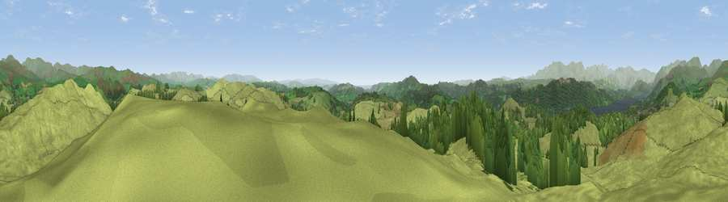

Viewpoint near Bowness on Windermere
#4782 in England · top 24% of its area beats it · near Bowness on WindermereThe view, rendered

A 360° render of this exact spot computed from the terrain model, tree cover and land cover — summer colours, afternoon light, calibrated against photographs of famous viewpoints. Real trees, hedges and buildings will differ in detail.
The panorama
Grey silhouette: terrain skyline in each direction (720 bearings, Earth curvature and refraction included). Dashed green: skyline with trees (+15 m) and buildings (+8 m) as obstacles. Blue strip: how far the ground is visible on each bearing.
Where the view opens
Wedge length = distance to the farthest visible ground on that bearing (vegetation-aware). Rings at 10, 25 and 50 km.
What fills the view
73% grassland · 25% woodland · 2% water
Angular shares of the visible panorama (visual magnitude), not map area. Landscape diversity 0.29 (0–1 Shannon).
Key numbers
More beautiful places nearby
The staircase of upgrades: each row has a higher view potential than everything closer. Driving times are estimates from straight-line distance, calibrated against real road routing — check an actual route before setting out.
| Place | Direction | Drive | Score |
|---|---|---|---|
| Brant Fell | WSW · 2 km | ~5 min | 72.4 |
| Viewpoint near Bowness on Windermere | WNW · 5 km | ~10 min | 75.0 |
| Claife Heights | W · 5 km | ~10 min | 79.0 |
| Wansfell Pike | NNW · 8 km | ~16 min | 80.6 |
| Viewpoint near Finsthwaite | SSW · 9 km | ~17 min | 84.7 |
| Viewpoint near Finsthwaite | SSW · 9 km | ~18 min | 90.3 |
| The Knoll | S · 409 km | ~389 min | 91.0 |
54.36237, -2.88139 · source: screening · position refined by local search. Computed location — check access rights before visiting.